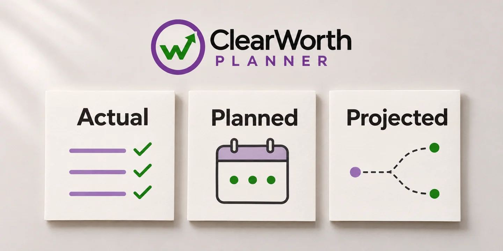

Latest post · Personal Finance / Projects
What Came In, What Went Out, and What’s Next?
See how ClearWorthPlanner brings actual transactions, planned income and expenses, and future projections together to help you make better decisions with your money.
